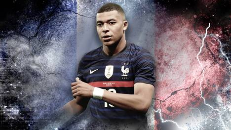

En esta página encontrarás información sobre mí y mis intereses.

Kylian Mbappé es un futbolista francés que ha logrado destacarse a nivel mundial por sus hazañas en el campo de juego. Nacido en París en 1998, Mbappé comenzó a jugar al fútbol desde muy joven y su talento pronto fue reconocido. A los 16 años, firmó su primer contrato profesional con el equipo Paris Saint-Germain y desde entonces ha demostrado su enorme potencial. Mbappé es un delantero rápido, ágil y con una habilidad increíble para el gol. Su velocidad y habilidad para moverse en el campo de juego lo han convertido en uno de los jugadores más deseados en el mundo. En la temporada 2016/2017, se convirtió en el jugador más joven en marcar en la final de la Ligue 1 y en la temporada siguiente ganó el título de la Ligue 1 con PSG. En 2018, Mbappé se convirtió en una estrella mundial después de su actuación en el Mundial de Rusia. Con su gran rendimiento, ayudó a Francia a ganar el campeonato y se convirtió en el segundo jugador más joven en marcar en una final de un Mundial. Además, ganó el premio Kopa, otorgado al mejor jugador menor de 21 años del año. Desde entonces, Mbappé ha seguido demostrando su talento en el campo de juego. Con su equipo, PSG, ha ganado varios títulos de la Ligue 1, incluyendo el título de campeón en 2019 y 2020.
En resumen, Kylian Mbappé es un jugador que ha logrado destacarse en el mundo del fútbol por sus hazañas y su talento. Con sólo 22 años, ha logrado ganar títulos importantes y se ha convertido en una estrella mundial. Sin duda, es un futbolista al que hay que seguir de cerca y cuyo legado en el fútbol será recordado por mucho tiempo.